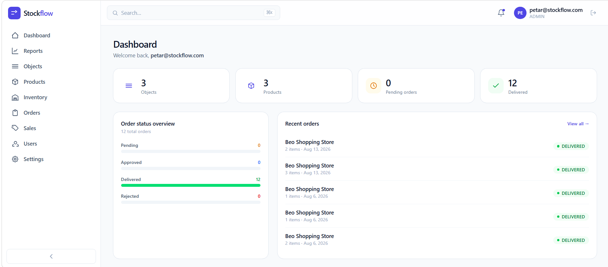

A premium stock-reconciliation platform built on a semantic, immutable ledger. It answers not just what the stock is — but why it's that number, and when it runs out.
No sign-up — a read-only demo account is on the login screen.

Every unit is explainable — in, out, and forecast. Four capabilities carry the whole product.
{{ f.body }}
An append-only stock_movements
table is the truth; inventory is a
trigger-maintained balance cache — never edited by hand. Business rules live in Postgres functions
& Row Level Security, so they hold no matter how the data is touched.
opening + deliveries − sales ± counts ± adjustments = current
Jump straight into a working instance with sample data — no sign-up, nothing to install.